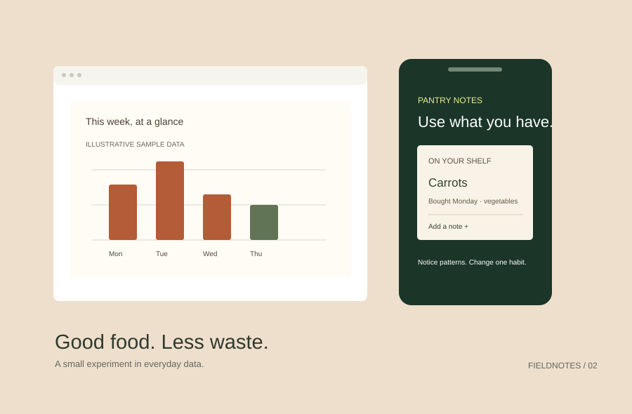

Making everyday waste visible.
A small design experiment about noticing food habits without turning dinner into another productivity task.
- My role
- Concept, data & visual design
- Collaboration
- Independent
- Timeframe
- Two weekends
- Status
- Concept / not launched

01. The question
What would a food journal look like if its first job was helping someone notice a pattern, rather than assigning a score? I explored a simple pantry list paired with a weekly reflection.
02. A deliberately small dataset
The sample project uses invented entries for a week of household food waste. They are illustrative, not research findings. I grouped entries by ingredient and reason, then sketched different ways to explain the pattern without suggesting a false trend.
03. My process
I started with a spreadsheet, tried a category chart and then simplified it into a daily view. I designed the item card and journal flow, including an empty state for a week with no notes. The graphics shown here are static concept illustrations.
A clear limitation is more useful than an impressive-looking number that the data cannot support.
04. The design decision
The main screen begins with items already on hand. The chart comes later, after someone has added notes. I chose neutral language and a small next action, rather than a competitive score or a comparison with other households.
05. What remains unresolved
A chart can show what was recorded, not everything that was wasted. Missing entries and different household sizes make comparisons misleading. I would test whether the labels make that limitation clear before collecting any real data.
06. What I learned
The most useful output was the question behind the chart. If I continued, I would prototype the note-entry flow first and ask whether the habit is worth maintaining before building the dashboard.
Inside the project notebook
Data dictionary
Date, ingredient, amount, unit and reason. Missing values stay empty rather than becoming zero.
Next experiment
Ask participants to try the note-entry prototype, then describe what they believe the weekly chart means.